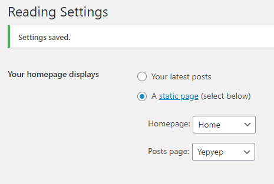

Is there a way to set the front page to a specific wp page?
I tried changing it in the CMS, but the Frontity front page still renders the latest posts. Handles it as isArchive.

When I set a static homepage like that, I get this for “http://localhost:3000/”:
id: 45
isArchive: true
isFetching: false
isHome: true
isPostArchive: true
isPostTypeArchive: true
isReady: true
items: (2) [{…}, {…}]
link: “/”
page: 1
query: {}
route: “/”
total: 2
totalPages: 1
There is no error with the /home/ page or the default frontity start page when I dont use the static page as homepage display. Everything works fine then.
If this is not supported yet… Maybe I could create an element for isHome. Then fetch the page through wp page id. And finally update the state.router.link. Or am I missing something?
You’ve pretty much stumbled upon the solution yourself. As you can see from the properties that you listed above, when you’re on the homepage isHome is equal to true. So, you can create a component called, say, <Home> and then conditionally select it from the <Switch> in your theme’s index.js:
Be aware that the order matters here. You will want to check for isHome == true before checking for isArchive == true or isPostType == true, for example. Just like any switch type statement, the first condition that resolves to true is the one that will execute.
Optimizing with “.webp” and “srcSet” right now. And trying to get the “source” attribute to serve the right images for my masonry grid - right now the srcset is determing size upon window width, rather than optimizing to the column size.
Maybe it would be nice for a future iteration of the theme to create a custom post type “artwork” that includes the image but also some information such as the title, the year and the techniques (for example). So when you click on an image in the home page you go to the artwork page with the image and some information instead of opening to the source link of the image.
any chance you could post an example of how you got this working? i’m very new to react and frontity and basically trying to do something similar. I want the home page to display all 4 pages as a single page website. Using Mars theme as the starting point but being so new i’m rather lost and with all the starter code.

 Thanks for your help
Thanks for your help